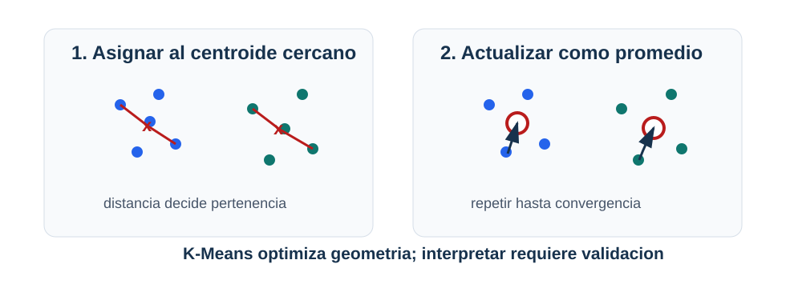

K-Means y clustering
Pregunta aplicada
Si no tenemos etiquetas, aún podemos preguntar:
¿hay grupos de observaciones con patrones similares?
K-Means busca particionar datos en \(k\) grupos representados por centroides.

Lectura de la figura. K-Means alterna entre asignar observaciones al centroide más cercano y mover cada centroide al promedio de su grupo. La interpretación aplicada viene después de validar que esa geometría tenga sentido.
Objetivos del capítulo
Al terminar este capítulo deberías poder:
- escribir la función objetivo de K-Means;
- explicar los pasos de asignación y actualización;
- interpretar inertia y silhouette sin absolutizarlos;
- justificar el escalamiento antes de usar distancias euclídeas;
- reconocer cuándo un cluster no debe traducirse directamente en una decisión.
Función objetivo
K-Means minimiza la suma de distancias cuadradas a centroides:
\[ \sum_{i=1}^n \|x_i-\mu_{c_i}\|_2^2. \]
Donde:
- \(c_i\) es el cluster asignado a \(x_i\);
- \(\mu_{c_i}\) es el centroide correspondiente.
Algoritmo
- Inicializar centroides.
- Asignar cada punto al centroide más cercano.
- Recalcular cada centroide como promedio del grupo.
- Repetir hasta convergencia.
Inertia
inertia es la suma de distancias cuadradas dentro de clusters.
Menor inertia no siempre significa mejor segmentación:
- baja al aumentar \(k\);
- no está normalizada;
- puede favorecer clusters poco interpretables.
Silhouette score
Para una observación:
\[ s=\frac{b-a}{\max(a,b)}. \]
Donde:
- \(a\): distancia media al propio cluster;
- \(b\): distancia media al cluster vecino más cercano.
Valores cercanos a 1 sugieren separación; valores cercanos a 0 sugieren solapamiento.
Ejemplo resuelto: por qué escalar cambia clusters
Supón dos variables: ingreso mensual en pesos y número de visitas a una página. Dos observaciones son:
\[ x_1=(5{,}000{,}000, 10),\qquad x_2=(5{,}100{,}000, 80). \]
La diferencia en ingreso es \(100{,}000\), mientras la diferencia en visitas es 70. En distancia euclídea sin escalar, el ingreso domina casi todo:
\[ \sqrt{100000^2+70^2}\approx 100000. \]
K-Means tenderá a agrupar por ingreso aunque visitas sea más relevante para la decisión. Después de estandarizar, cada variable se mide en desviaciones estándar y la distancia refleja patrones relativos, no unidades arbitrarias. Esto no garantiza clusters correctos, pero evita que una unidad de medida decida el resultado sin justificación.
Ejemplo resuelto: asignación a centroides
Supón dos centroides en una dimensión:
\[ \mu_1=2,\qquad \mu_2=8. \]
Para una observación \(x=5\):
\[ |5-2|=3,\qquad |5-8|=3. \]
La observación está empatada. En implementación debe haber una regla de desempate. Este ejemplo muestra que K-Means es geométrico: asigna por distancia, no por significado de negocio.
Ejemplo resuelto: una iteración completa
Supón cuatro puntos en una dimensión:
\[ x=(1,2,8,10) \]
y dos centroides iniciales:
\[ \mu_1=1,\qquad \mu_2=10. \]
Paso 1: asignar puntos.
| Punto | Distancia a \(\mu_1\) | Distancia a \(\mu_2\) | Cluster |
|---|---|---|---|
| 1 | 0 | 9 | 1 |
| 2 | 1 | 8 | 1 |
| 8 | 7 | 2 | 2 |
| 10 | 9 | 0 | 2 |
La inertia inicial con estas asignaciones es:
\[ (1-1)^2+(2-1)^2+(8-10)^2+(10-10)^2=5. \]
Paso 2: actualizar centroides.
\[ \mu_1^{nuevo}=\frac{1+2}{2}=1.5, \qquad \mu_2^{nuevo}=\frac{8+10}{2}=9. \]
Con los nuevos centroides, la inertia para las mismas asignaciones es:
\[ (1-1.5)^2+(2-1.5)^2+(8-9)^2+(10-9)^2=2.5. \]
La inertia bajó, pero eso no prueba que \(k=2\) sea la mejor decisión aplicada. Solo muestra que la actualización mejoró el objetivo geométrico de K-Means.
Derivación guiada: por qué el centroide es el promedio
Para un cluster con puntos \(x_1,\ldots,x_m\), K-Means escoge un centroide \(\mu\) que minimiza:
\[ \sum_{i=1}^{m}\|x_i-\mu\|_2^2. \]
En una dimensión, derivar respecto a \(\mu\) da:
\[ \frac{d}{d\mu}\sum_{i=1}^{m}(x_i-\mu)^2 = -2\sum_{i=1}^{m}(x_i-\mu). \]
Igualando a cero:
\[ \sum_{i=1}^{m}x_i-m\mu=0 \quad\Rightarrow\quad \mu=\frac{1}{m}\sum_{i=1}^{m}x_i. \]
En varias dimensiones ocurre componente a componente. Por eso la actualización del centroide es el promedio de los puntos asignados.
Escalamiento
K-Means usa distancia euclídea. Por tanto, las escalas importan.
Pipeline([
("scaler", StandardScaler()),
("kmeans", KMeans(n_clusters=3))
])Limitaciones
K-Means funciona mejor cuando los clusters son:
- aproximadamente esféricos;
- de tamaños comparables;
- separables por distancia euclídea.
Puede fallar con formas no convexas, densidades distintas o variables mal escaladas.
Caso longitudinal: clusters sintéticos
El archivo clusters_sinteticos.csv fue generado con tres centros compactos. Eso lo hace útil para aprender K-Means, pero también peligroso si se generaliza demasiado: favorece justo la geometría que K-Means prefiere.
| Evidencia | Uso |
|---|---|
| scatterplot escalado | inspección geométrica inicial |
| inertia por \(k\) | reducción de compactación |
| silhouette | separación relativa |
| tamaños de clusters | detectar grupos diminutos |
| estabilidad por semilla | revisar sensibilidad |
Si \(k=3\) gana en este dataset, no significa que “siempre hay tres segmentos”. Significa que, bajo esta geometría sintética y esta escala, tres centroides resumen bien la nube de puntos.
Estabilidad por inicialización
K-Means puede converger a soluciones distintas si cambian los centroides iniciales. Por eso un reporte debe fijar random_state y usar varias inicializaciones (n_init). Si dos corridas con el mismo \(k\) producen centroides muy distintos o clusters con tamaños incompatibles, la segmentación no es estable.
La estabilidad no convierte los clusters en categorías reales. Solo indica que el algoritmo encuentra una partición parecida bajo pequeñas variaciones de inicialización. La interpretación de dominio sigue siendo una segunda etapa.
Punto de control
Antes de reportar clusters, verifica:
- ¿las variables están en escalas comparables?
- ¿probaste más de un \(k\)?
- ¿los clusters son interpretables con variables originales?
- ¿hay un cluster demasiado grande o demasiado pequeño?
- ¿qué decisión concreta usaría esta segmentación?
Verificaciones seleccionadas
- La inertia siempre tiende a bajar cuando aumenta \(k\); por eso no basta para elegir el número de clusters.
- Si dos variables tienen escalas muy distintas, K-Means puede agrupar por la variable de mayor escala aunque no sea la más relevante.
- Un cluster no es una categoría real hasta que se interpreta con variables originales y contexto de decisión.
Ejemplo resuelto: elegir \(k\) con evidencia incompleta
Supón:
| \(k\) | Inertia | Silhouette |
|---|---|---|
| 2 | 420 | 0.48 |
| 3 | 260 | 0.55 |
| 4 | 210 | 0.51 |
La inertia baja de 3 a 4, pero silhouette cae. Una decisión defendible podría elegir \(k=3\), siempre que los clusters tengan tamaño razonable y puedan describirse con variables originales. La tabla no prueba que existan tres grupos naturales; solo apoya que \(k=3\) es una representación útil bajo esta geometría.
Para explorar más
- Extensión matemática: ejecuta una iteración de K-Means a mano con cuatro puntos y dos centroides iniciales distintos.
- Extensión computacional: compara inercia y silueta para varios valores de \(k\), usando la misma escala de variables.
- Conexión con proyecto: describe qué significaría cada cluster para una decisión real y qué variables dominan esa interpretación.
Revisión del capítulo
K-Means busca centroides que reduzcan la suma de distancias cuadráticas dentro de clusters. El algoritmo alterna asignación de puntos al centroide más cercano y actualización de centroides como promedios.
Inertia siempre tiende a bajar cuando aumenta \(k\), por lo que no puede usarse sola como prueba de calidad. Silhouette aporta otra señal, pero también depende de geometría, escala y estructura de los datos.
Una segmentación profesional requiere escalamiento, varias inicializaciones, descripción con variables originales y cautela aplicada. Un cluster matemático no es automáticamente un grupo accionable ni una categoría real de dominio.
Términos clave
- Clustering: agrupación no supervisada de observaciones.
- Centroide: punto representativo de un cluster.
- Inertia: suma de distancias cuadradas a centroides.
- Silhouette: métrica que compara cercanía al cluster propio frente a otros.
- Escalamiento: transformación necesaria cuando las variables tienen unidades distintas.
- Segmentación: interpretación aplicada de grupos, que requiere validación de negocio o dominio.
Ejercicios
Preguntas conceptuales
- Explique por qué inertia siempre tiende a bajar cuando aumenta \(k\).
- ¿Por qué K-Means debe usarse con escalamiento en variables de unidades distintas?
Problemas cuantitativos
- Asigne tres puntos en una dimensión a dos centroides dados y calcule inertia.
- Si un cluster contiene 90% de las observaciones, ¿qué revisaría antes de reportarlo?
Práctica computacional
- Ajuste K-Means para varios valores de \(k\) y reporte inertia y silhouette.
- Construya un pipeline con escalamiento y K-Means.
Interpretación y pensamiento crítico
- Proponga una situación donde clusters matemáticamente separados no deberían convertirse directamente en una decisión aplicada.
- ¿Qué evidencia usaría para nombrar un cluster sin caer en sobreinterpretación?
Proyecto de cierre
- Genere una segmentación con K-Means, describa cada cluster usando variables originales y escriba una recomendación cautelosa de uso.